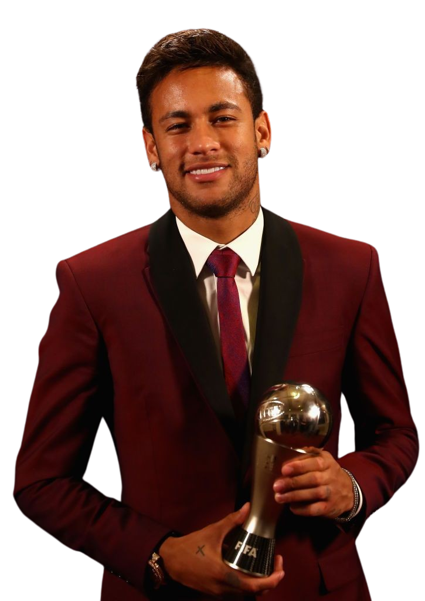
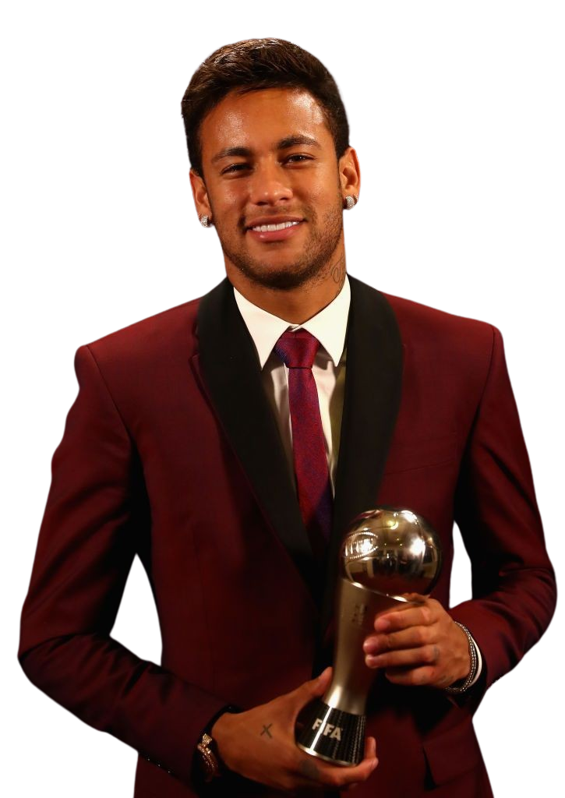

Neymar da Silva Santos Júnior (pronunciación en portugués: /nejˈmaʁ dɐ ˈsiwvɐ ˈsɐ̃tus ˈʒũɲoʁ/; Mogi das Cruzes, São Paulo, 5 de febrero de 1992), conocido como Neymar Júnior o simplemente Neymar, es un futbolista brasileño que juega como delantero en el Al-Hilal Saudi F. C. de la Liga Profesional Saudí. Es internacional absoluto con la selección de fútbol de Brasil. Reconocido como un destacado goleador y creador de juego, es ampliamente considerado uno de los mejores jugadores del mundo.
Surgió de las categorías juveniles del Santos, donde hizo su debut profesional a los 17 años.6 Considerado uno de los juveniles más prometedores del mundo,7 ganó tres Campeonatos Paulistas seguidos, una Copa de Brasil, y una Copa Libertadores, —donde fue máximo goleador y mejor jugador del certamen—, la primera del club desde 1963 con Pelé. En Brasil, empezó a hacerse conocido por sus regates llamativos,8 por haber ganado el Premio Puskás en 2011, y el Futbolista del Año en Sudamérica en 20119 y 2012.10 En 2013, fue transferido al F.C Barcelona,11 donde conformó un recordado trío en ataque junto al argentino Lionel Messi y el uruguayo Luis Suárez, denominado la MSN.12 Juntos, bajo el mandato de Luis Enrique, consiguieron el triplete, obteniendo La Liga, la Copa del Rey, y la UEFA Champions League 2014-15. Gracias a esto, logró salir tercero en la votación al Balón de Oro 2015. En 2016 obtuvo el doblete, y en 2017, sería transferido en el verano al equipo parisino por 222 millones de euros, convirtiéndose en el traspaso más caro en la historia del fútbol.13 En Francia, Neymar obtuvo cuatro títulos de liga, dos Copa de Francia y dos Copa de la Liga, obteniendo un triplete doméstico y fue votado como el Jugador del Año de la Ligue 1 en su temporada debut. En la temporada 2019-20 obtuvo todos los títulos domésticos y llegó junto a su equipo a la final de la Champions League.
Con 79 goles en 125 partidos con Brasil desde su debut a los 18 años, es el máximo artillero de su selección, superando a Pelé.14 Fue un jugador clave para la conquista del Sudamericano sub-20 2011, donde terminó como máximo goleador,15 y también logró una medalla de plata en el fútbol masculino en los Juegos Olímpicos de Londres de 2012. Al año siguiente, ganó la Copa Confederaciones,16 donde fue elegido Balón de Oro.1718 Sus participaciones en el Mundial 2014 y la Copa América 2015 fueron cortas debido a sus lesiones y expulsiones. Sin embargo, capitaneó al equipo sub-23 de la canarinha para su primera medalla de oro en los Juegos Olímpicos de Río 2016. En 2018 participó del Mundial de Rusia 2018 donde Brasil quedó eliminada en cuartos de final ante Bélgica. Fue subcampeón con Brasil en la Copa América 2021.
Neymar terminó tercero en el Balón de Oro de la FIFA en 2015 y 2017, ha sido galardonado con el Premio Puskás, ha sido nombrado dos veces en el FIFA FIFPro World11, dos veces en el Equipo del Año de la UEFA y en el Equipo de la Temporada de la UEFA Champions League tres veces.
 



Fuera del campo, se volvió uno de los deportistas más lucrativos de los últimos años; SportsPro lo nombró el atleta con más marketing del mundo en 2012 y en 2013, y ESPN lo citó como el cuarto deportista más conocido del mundo en 2016. En 2017, fue incluido en la lista de Time de las 100 personas más influyentes del mundo.19 En 2018 France Football lo nombró el tercer futbolista mejor pagado del mundo. En 2019, Forbes lo posicionó como el tercer atleta más pagado del mundo, y el cuarto en 2020.20 Durante nueve años, Neymar fue uno de los principales patrocinadores de la empresa estadounidense de ropa deportiva Nike, hasta que firmó con la marca alemana Puma en agosto de 2020.21